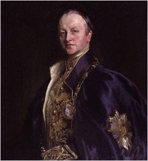
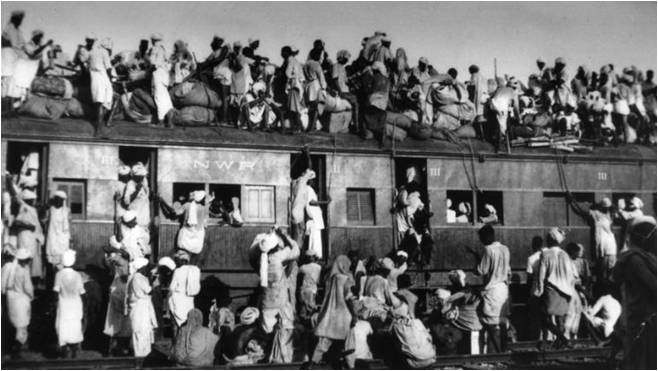
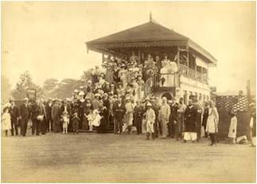
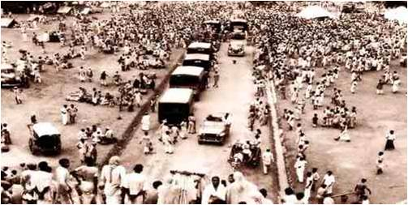
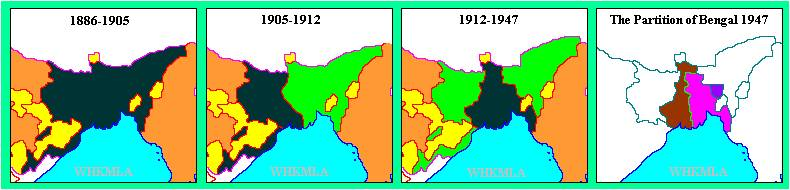

1905-11

The Partition of Bengal (1905) was a territorial reorganization of the Bengal Presidency carried out by British Raj authorities. The reorganisation divided the predominantly Muslim eastern areas from the predominantly Hindu western areas. Lord Curzon, the then-Viceroy of India, announced it on 20 July 1905, and it went into effect on 16 October 1905, only to be reversed six years later. The Hindus of West Bengal objected to the division, claiming that it would make them a minority in a province that would include Bihar and Orissa. Hindus were outraged by what they saw as a "divide and rule" policy, despite Curzon's assurances that it would result in administrative efficiency.
Lord Curzon
The uproar that had greeted Curzon's contentious move of splitting Bengal, as well as the emergence of the 'Extremist' faction in the Congress, became the final motive for separatist Muslim politics. In 1909, separate elections were established for Muslims and Hindus.
Student participation was visible in Bengal, Poona (Maharashtra), Guntur (Andhra Pradesh), Madras and Salem (Tamil Nadu).The police adopted a repressive attitude towards the students. The students found guilty were fined, expelled, beaten, arrested and disqualified for government jobs and scholarships.
The agenda of boycott considerably reduced the import of foreign goods in India, the Swadeshi movement in the wake of the anti-Partition agitation paved the way for the development of indigenous industries, Swadeshi movement saw the flowering of the Bengali literature.
 Partition of Bengal from 1857 to 1947